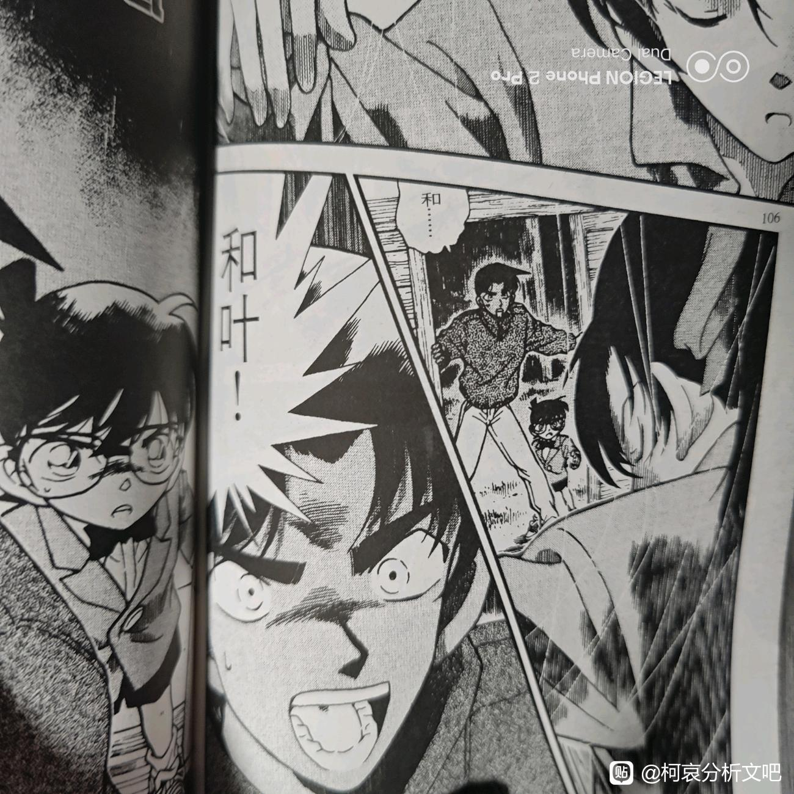
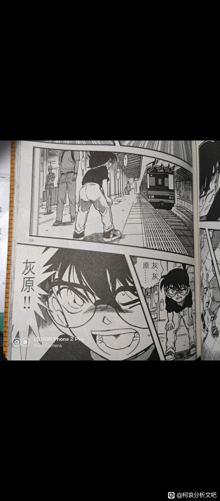

这是我之前发完柯哀剧情的对比与照应后想到的，今天发出来
首先抛出一个很关键答案也可能不唯一的问题
即在名柯中感情线最完整最深刻的 CP 都有哪些？
可能很多人会有不同的答案，但我想说一下我的看法
如果只从设定来看，答案是新兰
但如果从剧情来看，我认为是柯哀，平和和高佐
那我就浅谈一下我的看法
1.高佐
这一对经历了从相识，到互有好感，到双向奔赴，到终成眷属的过程，可以说高佐的感情线比大多数 CP 完整的多，那么他们与柯哀的相似点在哪儿呢
a.高佐有佐藤正义的手铐护身符，柯哀有眼镜护身符
b.佐藤会为了高木的查案甘愿放弃自己的初吻，哀会为了柯南的查案不厌其烦地去帮助柯南查找一系列资料（简单来说就是女方都在支持男方的事业）
c.都有过双向奔赴与情感爆发，高木对佐藤的奔赴位于漫画 231 话（佐藤误将自己与嫌犯锁在即将被爆炸拆迁的美术馆里，高木为救佐藤查案），佐藤对高木的奔赴位于 TV 赌上性命的恋爱转播， 情感爆发点位于震撼警政厅篇
柯哀则是一直在双向奔赴（最明显为满月篇），情感爆发点可以是满月篇，也可以是 M26
还有很多就不一一列举了
2.平和
我曾不止一次提到过平和即是柯哀的复制粘贴，而平和恰好也是新兰的对比与对立
a.同为青梅竹马，可给人感觉丝毫不同
名柯里很特别的现象，目前所有 CP 中，青梅竹马有平和，新兰，毛妃，敢由，白林，然而青山的刻画却都集中在了平和和新兰上，很容易想到老贼又在搞对比这一套（结果也确实证明了老贼绝对会写青梅竹马可就是不好好写新兰）
b.平和的御守护身符与柯哀的眼镜护身符
作为最早出现的护身符，也是名柯里第一个双向护身符，平和的含金量也是正式有了一席之地
c.双向奔赴
人鱼岛事件让平和第一次正式拥有了 CP 绝对的定义与含金量，而与之对应的则是柯哀在神秘乘客篇的奔赴
d.平平淡淡才是真
板仓卓事件后哀在情人节当天找到柯，和叶与平次欣赏夕阳，而后都是平平淡淡的笑容
所以抛开其他剧情的对应，新兰还有什么可比呢？
死罗神篇后新兰再无心电感应（M26 柯哀心灵交流）
伦敦篇后新一免疫兰的眼泪（M26 柯南丢了哀自己“流泪）
红修篇后新一被封号七年（M26 老贼想让柯南变回新一救灰原）
有些感情线需要推理记录，不是靠简单的设定
首先抛出一个很关键答案也可能不唯一的问题
即在名柯中感情线最完整最深刻的 CP 都有哪些？
可能很多人会有不同的答案，但我想说一下我的看法
如果只从设定来看，答案是新兰
但如果从剧情来看，我认为是柯哀，平和和高佐
那我就浅谈一下我的看法
1.高佐
这一对经历了从相识，到互有好感，到双向奔赴，到终成眷属的过程，可以说高佐的感情线比大多数 CP 完整的多，那么他们与柯哀的相似点在哪儿呢
a.高佐有佐藤正义的手铐护身符，柯哀有眼镜护身符
b.佐藤会为了高木的查案甘愿放弃自己的初吻，哀会为了柯南的查案不厌其烦地去帮助柯南查找一系列资料（简单来说就是女方都在支持男方的事业）
c.都有过双向奔赴与情感爆发，高木对佐藤的奔赴位于漫画 231 话（佐藤误将自己与嫌犯锁在即将被爆炸拆迁的美术馆里，高木为救佐藤查案），佐藤对高木的奔赴位于 TV 赌上性命的恋爱转播， 情感爆发点位于震撼警政厅篇
柯哀则是一直在双向奔赴（最明显为满月篇），情感爆发点可以是满月篇，也可以是 M26
还有很多就不一一列举了
2.平和
我曾不止一次提到过平和即是柯哀的复制粘贴，而平和恰好也是新兰的对比与对立
a.同为青梅竹马，可给人感觉丝毫不同
名柯里很特别的现象，目前所有 CP 中，青梅竹马有平和，新兰，毛妃，敢由，白林，然而青山的刻画却都集中在了平和和新兰上，很容易想到老贼又在搞对比这一套（结果也确实证明了老贼绝对会写青梅竹马可就是不好好写新兰）
b.平和的御守护身符与柯哀的眼镜护身符
作为最早出现的护身符，也是名柯里第一个双向护身符，平和的含金量也是正式有了一席之地
c.双向奔赴
人鱼岛事件让平和第一次正式拥有了 CP 绝对的定义与含金量，而与之对应的则是柯哀在神秘乘客篇的奔赴
d.平平淡淡才是真
板仓卓事件后哀在情人节当天找到柯，和叶与平次欣赏夕阳，而后都是平平淡淡的笑容
所以抛开其他剧情的对应，新兰还有什么可比呢？
死罗神篇后新兰再无心电感应（M26 柯哀心灵交流）
伦敦篇后新一免疫兰的眼泪（M26 柯南丢了哀自己“流泪）
红修篇后新一被封号七年（M26 老贼想让柯南变回新一救灰原）
有些感情线需要推理记录，不是靠简单的设定
顺带又有一个新的对照发出来
前为 TV《鸟取蜘蛛之家的古怪》，后为 TV《疯狂足球迷》，平次对和叶，柯对哀，都是在叫着对方的名字，都是焦急的神情，只是他们太像了


2023-10-17 12:35 | 长大后可水了:柯子要更急一点，毕竟有两个感叹号2023-10-17 12:46 | 贴吧用户_a4MAEUU:回复 长大后可水了 :这样对比反而更强烈，和叶被凶手挂起来平次的情绪激烈程度不如灰原可能离开自己柯的情绪失控2023-10-17 13:13 | 不重则不威◎:还有人说这段漫改动画更好些，可这明显漫画里柯子更着急更紧张，漫画里流汗，表情更扭曲2023-10-17 14:46 | 辣舞西弟:回复 不重则不威◎ :此外还有哀被触动的画面，漫画比动画明显很多。2023-10-17 18:54 | 贴吧用户_a4MAEUU:回复 不重则不威◎ :这段被认为是漫改动画好主要是因为青野的画风还有哀对柯南说“你一定会保护我对吧”这一场景比原漫画更长更细致（原漫画只有两个小格子）2023-10-17 18:54 | 贴吧用户_a4MAEUU:回复 不重则不威◎ :但其实我认为老贼这样写是刻意的，前面无论是柯南追灰原还是后面柯南告诉哀比护进球的时候老贼都不会吝惜大格子去描绘，他就是想说柯南嘴上答应其实并不是多重要，他实际已经这么做了2023-10-22 23:15 | Ranehta:回复 不重则不威◎ :月台追车还是漫画好啊（感叹）大表情和微表情都画得更好，篇幅看上去没有很长，在爆发与克制的平衡点上摇摇欲坠

红修篇已经七年了？
2023-10-18 09:56 | 贴吧用户_a4MAEUU:差不多了


dd